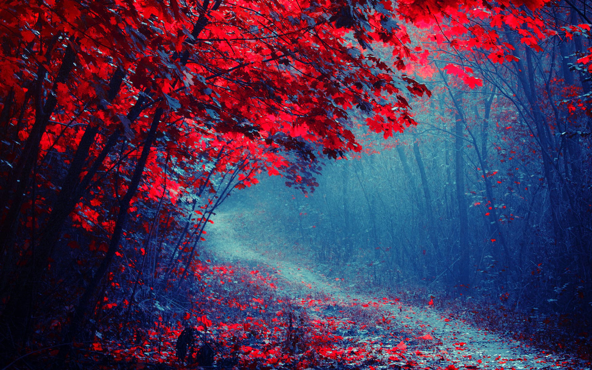
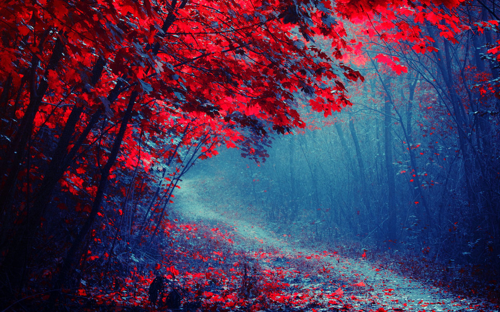
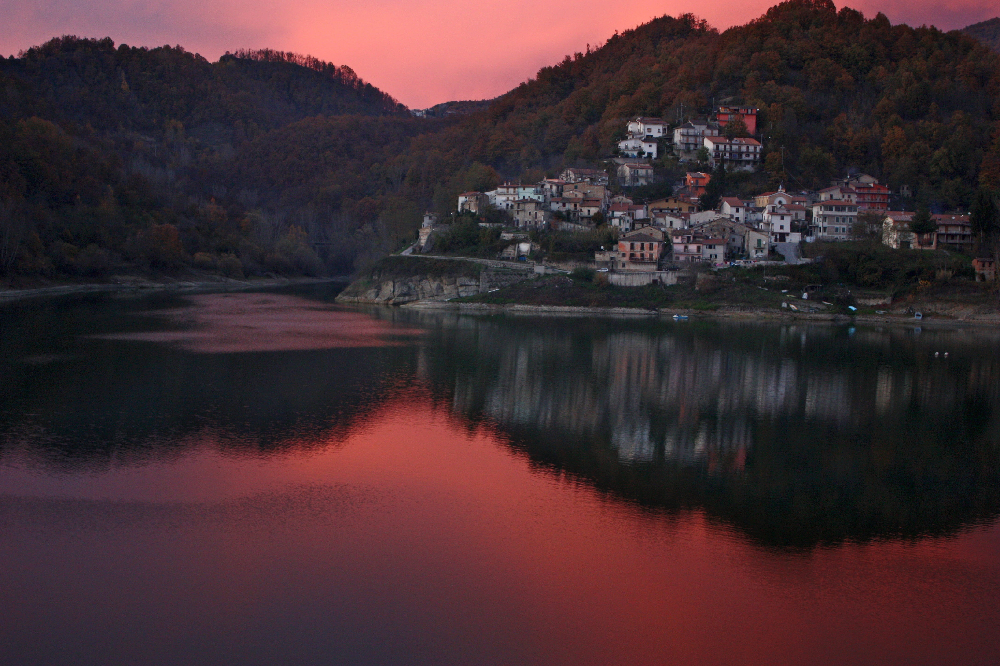

Paisajes Carmesí
Es considerado el color del amor, el calor, la energía y la afección. El carmesí posee una personalidad vívida, que es derivada de su inherente gran visibilidad. Sin embargo, también es un color que representa a la sangre, así que suele emparejarse con la ira, venganza e incluso lujuria.
 

El color carmesí corresponde específicamente a la coloración del polvo que resultaba de triturar los cuerpos secos de los insectos llamados quermes (Kermes vermilio ), que se recogían principalmente de los arbustos Quercus coccifera, y que se comercializaba en los países mediterráneos como pigmento para teñir telas.
